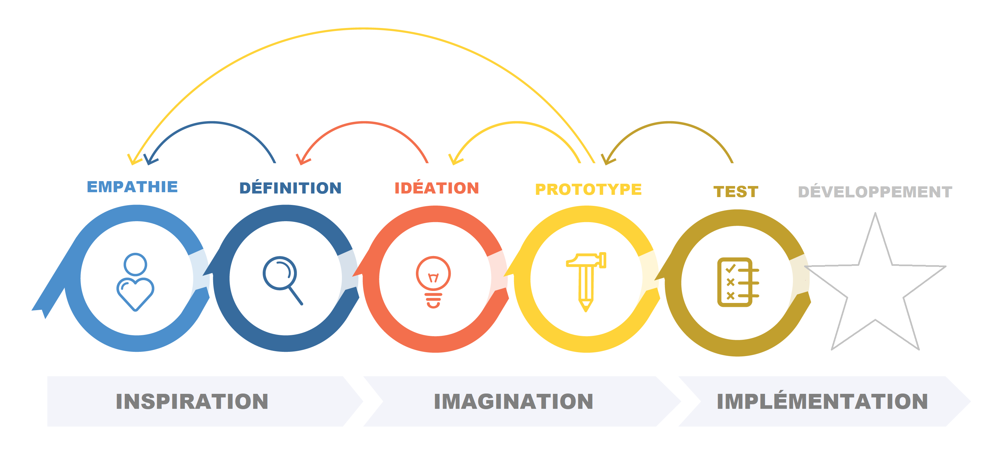
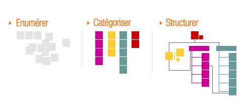
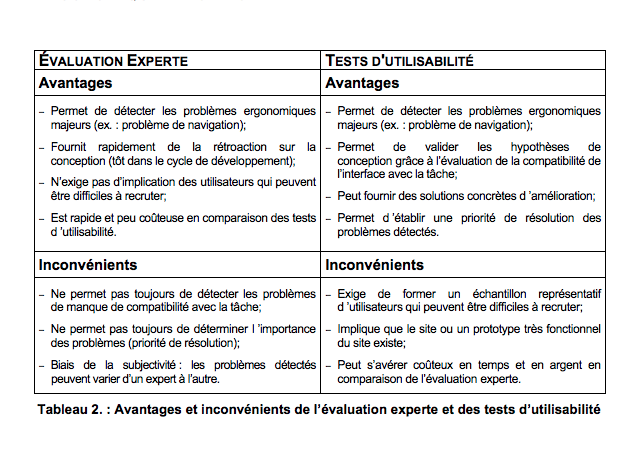
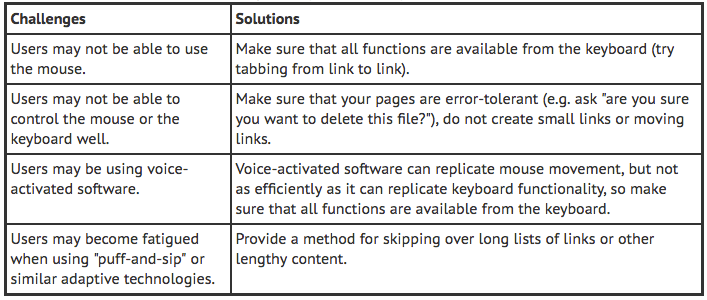

Voir Aussi: Notions de bases
(- sa facilité d'utilisation, , - sa facilité d'apprentissage, , - son efficacité d'utilisation, , - son utilisation sans erreurs , - la satisfaction de ses utilisateurs )
(- recueillir des informations par des voies perceptives (vision, audition, toucher…) , - effectuer des traitements cognitifs pour comprendre ces informations , - éventuellement répondre au système en engageant des actions motrices (gestes, commandes vocales, ou actions sur un outil tel que souris, écran tactile, clavier…) )




(Définition générale, • Organiser l’information, • Concevoir le système de navigation, • Développer l’interactivité, • Présenter l’information)
(• La phase d’analyse, • La phase de conception, • La phase de production, • La phase d’évaluation)

